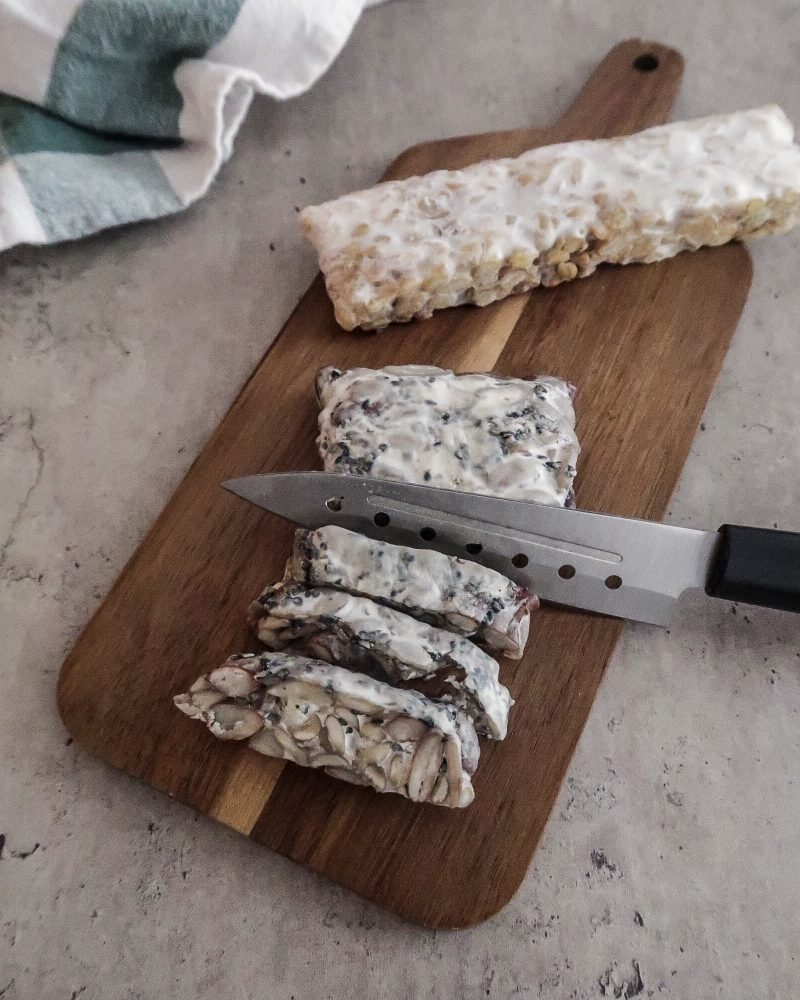

Tempeh is an Indonesian food made with fermented soybeans. As the soybeans ferment, they become more easily digestible. Tempeh is also a great source of protein and fiber and it promotes gut health.
This recipe focuses on creating home made tempeh for you to enjoy. Home made tempeh takes a couple days to make, but it provides opportunities to experiment and customize your tempeh.